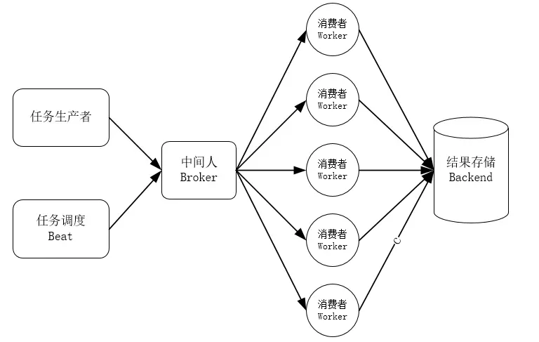
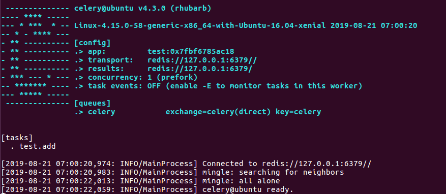
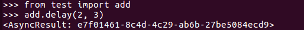
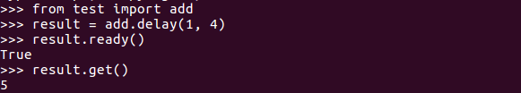

Celery是一个简单，灵活，可靠的分布式系统，用于处理大量消息，同时为操作提供维护此类系统所需的工具。它是一个任务队列，专注于实时处理，同时还支持任务调度。
所谓任务队列，是一个逻辑上的概念，可以将抽象中的任务发送到指定的执行任务的组件，任务队列可以跨线程或机器运行。
Celery是基于Python开发的分布式异步消息任务队列，通过它可以轻松的实现任务的异步处理， 如果你的业务场景中需要用到异步任务，就可以考虑使用celery。
1.高并发的请求任务，比如需要发送大量请求的网络爬虫，就可以使用Celery来加速爬取。
2.异步任务，将耗时的操作交给Celery来完成，比如发送/接收邮件、消息推送等等。
3.定时任务，需要定时运行的程序，比如每天定时执行爬虫爬取数据。
下图是我找到的一张表示Celery架构的图：

任务生产者：产生任务并且把任务提交到任务队列的就是任务生产者。
任务调度Beat：Celery会根据配置文件对任务进行调配，可以按一定时间间隔周期性地执行某些任务。
中间人Broker：Celery使用消息进行通信，需要中间人在客户端和Worker之间进行传递，接收客户端发送过来的任务，并将任务分配给Worker。
在Celery的文档中，可以找到官方给出的实现Broker的工具有：
| 名称 | 状态 | 监控 | 远程控制 |
| RabbitMQ | 稳定 | 是 | 是 |
| Redis | 稳定 | 是 | 是 |
| Amazon SQS | 稳定 | 否 | 否 |
| Zookeeper | 实验性 | 否 | 否 |
消费者Worker：Worker是执行任务的单元，在Celery任务队列中属于消费者。Worker会不断地监听队列，一旦有任务添加进来，就会将任务取出来进行执行。Worker还可以运行在多台机器上，只要它们都指向同一个Broker就可以。
结果存储Backend：结果存储Backend，顾名思义就是将Worker执行后得到的结果存储起来。Celery中有几个内置的结果存储可供选择，包括SQLAlchemy / Django ORM、Redis、RabbitMQ、Mamcached等。
Celery4.0版本是支持Python2.7的最后一个版本，所以如果你还在用py2的话，可能要选择安装Celery3或者更早的版本。我本人用的Python版本是Python3.7，然后安装的Celery版本是4.3。安装的话使用pip安装就好：
pip install celery
如果pip安装出错的话，可以去这个网址进行下载。在使用pip安装的时候会自动安装一些相关依赖，如果这些依赖安装出错的话，搜一下相应版本的Wheel文件下载安装即可。
中间件Broker我选择使用的是Redis，这里就不说Redis怎么安装了，上一篇博客中有Ubuntu下安装Redis的介绍。
在使用Celery的时候，第一件事是要创建一个Celery实例，一般称之为应用，简称为app。创建一个test.py，其中代码如下：
1 from celery import Celery
2
3
4 app = Celery("test", broker="redis://127.0.0.1:6379", backend="redis://127.0.0.1:6379")
5
6
7 @app.task
8 def add(x, y):
9 return x + y在创建好应用之后，就可以使用Celery命令执行程序运行Worker了：
celery -A test worker -l info
运行后可以看到如下图：

有关可用命令行选项的完整列表，执行如下命令：
celery worker --help
要调用任务，可以使用delay()方法。

该任务会返回一个AsyncResult实例，可用于查询任务状态、获取任务返回值等。此时查看前面运行的服务器，会看到有如下信息：
Received task: test.add[e7f01461-8c4d-4c29-ab6b-27be5084ecd9]
Task test.add[e7f01461-8c4d-4c29-ab6b-27be5084ecd9] succeeded in 0.006505205000166825s: 5
在前面定义的时候，已经选择使用Redis作为结果后端了，所以任务执行后的结果会保存到Redis中。而且，在调用任务的时候，还可以进行如下操作：

其中ready()方法会返回该任务是否已经执行，get()方法则会获取任务返回的结果。
由于Celery的配置信息比较多，因此一般会创建一个配置文件来保存这些配置信息，通常会命名为celeryconfig.py。在test.py所在文件夹下新建配置文件celeryconfig.py，其中的代码如下：
1 # broker(消息中间件来接收和发送任务消息)
2 BROKER_URL = 'redis://127.0.0.1:6379'
3 # backend(存储worker执行的结果)
4 CELERY_RESULT_BACKEND = 'redis://127.0.0.1:6379'
5
6 # 设置时间参照，不设置默认使用的UTC时间
7 CELERY_TIMEZONE = 'Asia/Shanghai'
8 # 指定任务的序列化
9 CELERY_TASK_SERIALIZER = 'json'
10 # 指定执行结果的序列化
11 CELERY_RESULT_SERIALIZER = 'json'然后修改下test.py中的代码：
1 from celery import Celery
2
3
4 app = Celery("test")
5 app.config_from_object("celerystudy.celeryconfig")
6
7
8 @app.task
9 def add(x, y):
10 return x + y